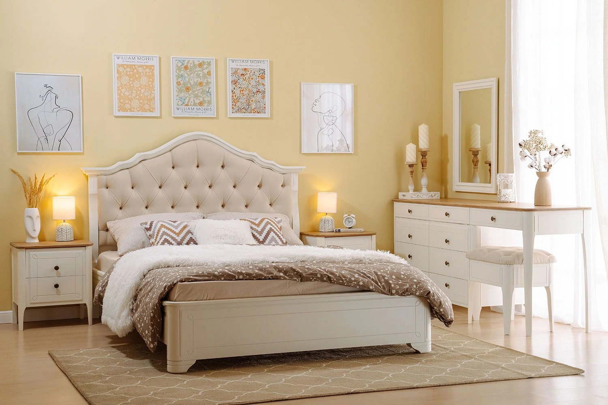

МЕБЕЛЬ ИЗ МАССИВАСпальня.
Спальня.
В вашем стиле.
Кровати, шкафы, комоды и мебель из массива. Подберём предметы, которые сочетаются друг с другом и подходят вашему дому.
Подобрать мебель
КРОВАТЬ БЕТТИ №70Одна модель.
Одна модель.
Ближе к деталям.
Кровать «Бетти №70» в интерьере и крупным планом. Обсудим размер, исполнение и подходящую мебель для вашей спальни.
Обсудить выбор